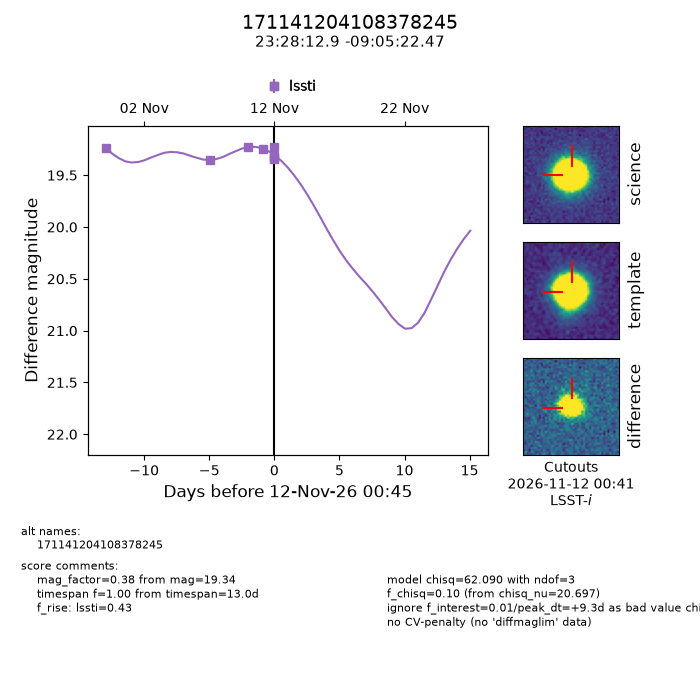
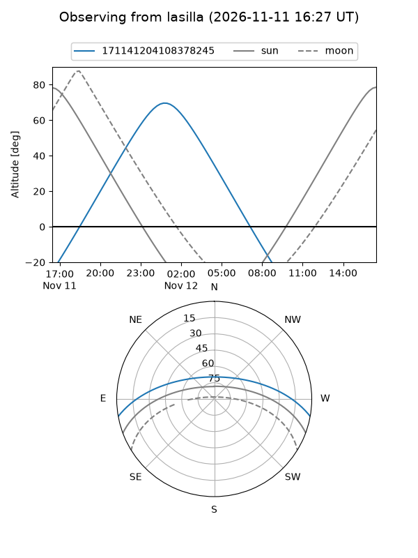
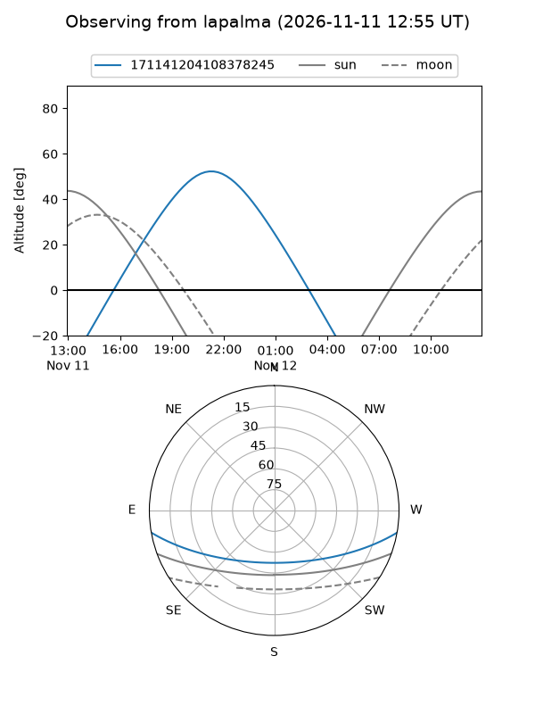
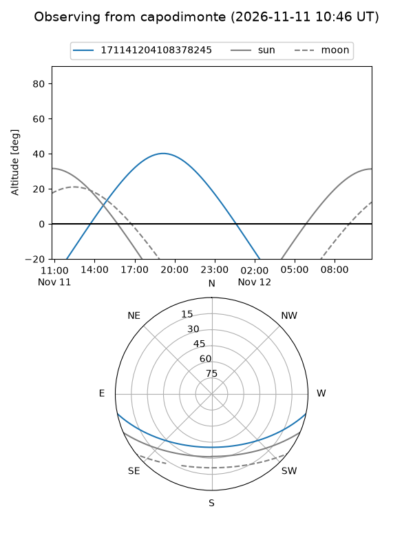
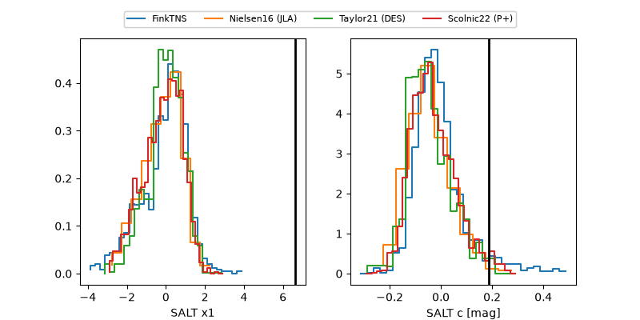

171141204108378245
Target 171141204108378245 at 2026-11-12 00:47
Aliases and brokers:
FINK-LSST: lsst.fink-portal.org/171141204108378245
Lasair-LSST: lasair.lsst.ac.uk/objects/171141204108378245
ALeRCE-LSST: lsst.alerce.online/object/171141204108378245?survey=lsst
Direct TNS query: direct search
alt names
171141204108378245 (broker_lsst,fink_lsst)
Coordinates:
equatorial (ra, dec) = 352.0538,-9.08957
equatorial (HMS+DMS) = 23:28:12.91,-09:05:22.47
galactic (l, b) = (71.5625,-63.32160)
Flags:
peak dt: +9.3
Photometry:
last lssti=19.34
8 lssti detections
Lightcurve

Visibility



Additional plots
